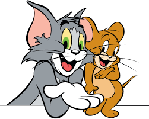

NO QUESTIONS ARE SILLY,
NO QUESTIONS ARE STUPID,
IF ASKED, THEN ...
THE LEARNER IS LEARNING
TREADING THE RIGHT PATH
TOWARDS GAINING KNOWLEDGE
I strongly believe in the above quotes. And this is Shalini Mittal, one who is going to be your coach, your friend, for next few months. Ofcourse before we begin would you like to know me? I am interesting, funny, silly at times, but I promise you will enjoy the learning path.
We all are in this together interacting with each other asking questions as much as we want. Remember if you dont ask, I have lots of questions for you. Thats the reason I like to call myself "The CURIOUS GEORGE". And I really would love to call my participants "THE CURIOUS GEORGE" TOO.
So are we all IN? Are we all SET?
GET SET READY, to know a bit more about me!!!
Ohh!! I have so many hobbies. I am a person who loves to do everything, try all possible activities and sports. I have tried skiing, snowboarding, jet ski, scuba diving, sea walk, snorkeling, bungy jumpy and what not. But yes I do have few hobbies that I like to do if I get free time. Like...
Badminton
Playing Cards
Swimming
Dancing
Scrabble
Solving puzzles
Sudoku
And the list goes on...
Characters though imaginary some times so closely resemble us. They take us in another world of dreams that is full of life and love. My favorite characters are:

Alice in wornderland

Elisa
Tom & Jerry

Scooby DOOBy DOOOO
I wish to wish oh so many wishes to fulfill all my wishes that may come true. ALAS!!! I know wishes are wishes and some wishes are meant to remain as wishes...
Bring smile on every face I meet
Sky Diving
Ride A Bike
Shout out loud from my terrace
Stand on an Airplane